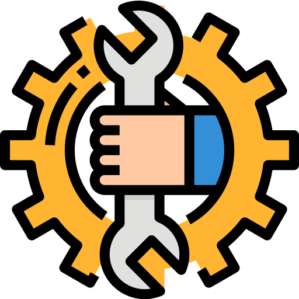

Estamos trabalhando no desenvolvimento e nas melhorias do site. Clique abaixo para saber mais.
Estamos trabalhando continuamente para construir uma plataforma mais moderna, estável e eficiente. Esta página encontra-se temporariamente em manutenção enquanto realizamos melhorias que visam proporcionar uma experiência melhor aos usuários.
O desenvolvimento de uma plataforma exige testes, ajustes e aperfeiçoamentos constantes. Por isso, este período é importante para revisar o que já foi construído, corrigir possíveis problemas e preparar novas funcionalidades antes de disponibilizá-las.
Enquanto trabalhamos nos bastidores, cada atualização representa mais um passo em direção a uma plataforma melhor. Nosso objetivo é entregar um resultado funcional, organizado e preparado para futuras expansões.
Obrigado pela paciência e por acompanhar o desenvolvimento. Em breve, esperamos apresentar as melhorias que estão sendo preparadas.